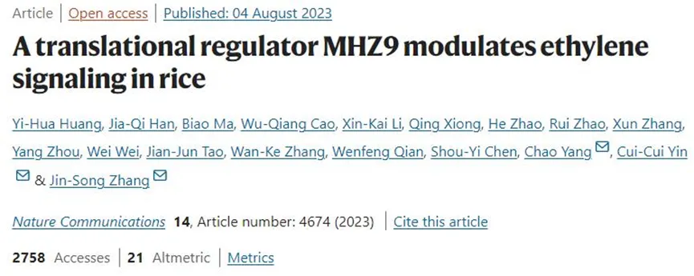

《NC》：翻译调控子MHZ9调节水稻中的乙烯信号通路
原文：https://mp.weixin.qq.com/s?__biz=MzAwMzIzOTk5OQ==&mid=2247504327&idx=2&sn=0fccf3451e3cde354027d99037804ec7&chksm=9b3ca897ac4b21816a9805354728ec17fc107c3472e2c4824c5ea7bf8803c12c4f03b3cfbc45#rd 合集：文献速递 / 粉丝来稿
主要内容

作为一种重要的植物激素，乙烯在植物生长发育与逆境胁迫中发挥了重要作用。前期研究表明，拟南芥EIN2通过直接或间接靶向乙烯信号负调控组分EBF1/2的mRNA，进行翻译抑制，进而激活乙烯通路。然而这个过程中RNA结合蛋白是否参与，乙烯信号在全基因组水平的翻译调控模式 等都研究甚少。
中国科学院遗传发育所张劲松研究组通过对水稻乙烯不敏感突变体mhz9研究，鉴定到一个含有甘氨酸-酪氨酸-苯丙氨酸(GYF)结构域的蛋白MHZ9，随后发现该蛋白可直接结合OsEBF1/2以及其它mRNA，在全基因组水平进行翻译调控，进而激活乙烯反应。
MHZ9定位于胞质P-body ，其C端富含谷氨酰胺的结构介导了与OsEIN2 的蛋白互作及亚细胞定位。MHZ9蛋白的N端含有RNA加工相关结构域PRP4，可直接结合OsEBF的mRNA及其它相关基因。水稻中，MHZ9的C端与OsEIN2 CEND蛋白互作，激活MHZ9蛋白N端的RNA结合活性，进而结合OsEBF1/2的mRNA的3’UTR区域，对这些mRNA进行翻译抑制。在mhz9中，OsEBFs的翻译则没有受到抑制，使得OsEBFs蛋白累积，降低了下游转录因子OsEIL1的稳定性，造成根的乙烯不敏感反应。
Ribo-seq 可以在全基因组水平上监测蛋白质的翻译水平，对野生型和突变体进行测序以及分析，发现乙烯造成水稻大量基因翻译效率的改变，这些基因位于氨基酸代谢、tRNA合成、自噬和脂类代谢等通路中。但乙烯诱导的翻译响应基因中有超过90%基因的翻译效率改变依赖MHZ9。MHZ9还影响了包括株高、分蘖数和籽粒大小在内的诸多农艺性状，暗示它可能通过介导转录后/翻译调控来参与植物的不同生长发育过程。这项研究鉴定了水稻新的乙烯信号调控组分，揭示了乙烯信号转导的翻译调控机制，为培育耐逆稳产水稻等作物提供了重要的基因资源和理论依据。 遗传发育所张劲松课题组博士后黄一华、博士生韩佳祺和华南农业大学马彪研究员为本文的共同第一作者，张劲松研究员、阴翠翠助理研究员和中国农业大学杨超副研究员为本文共同通讯作者。遗传发育所陈受宜研究员和钱文锋研究员等也参与了该研究。该研究受到国家自然科学基金等项目资助。

如何联系我们

 公众号后台消息更新不及时，超过48h便不许回复读者消息，这里给大家留一下领取资料及免费服务器(有root权限的共享服务器,注册即送200￥)的微信号 ，方便各位随时交流、提建议（科研任务繁重，回复不及时请见谅）。此外呼声一直很高的交流群 也建好了，欢迎大家入群讨论：
公众号后台消息更新不及时，超过48h便不许回复读者消息，这里给大家留一下领取资料及免费服务器(有root权限的共享服务器,注册即送200￥)的微信号 ，方便各位随时交流、提建议（科研任务繁重，回复不及时请见谅）。此外呼声一直很高的交流群 也建好了，欢迎大家入群讨论：
大家可以阅读完这几篇之后添加给生信入门初学者的小贴士 如何搜索公众号过往发布内容

 您点的每个赞和在看，我都认真当成了喜欢
您点的每个赞和在看，我都认真当成了喜欢